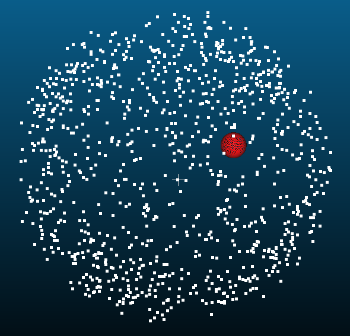
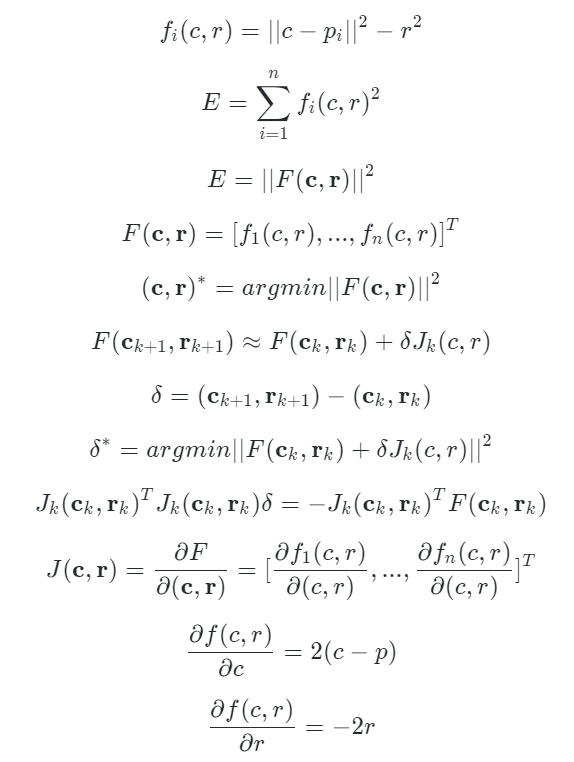
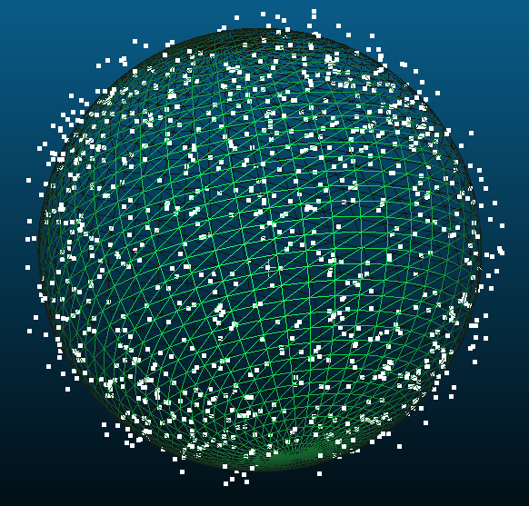
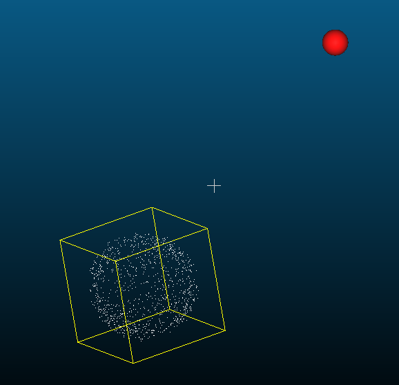

点云球心拟合
文章目录
最近有人问怎么对球状的三维点云进行拟合，得到球心的位置和半径，对于这类问题，我首先想到的是二维图像中圆检测的方法霍夫变换，但是霍夫变换是在图像中进行的，而这是三维点云，如果是体素的话还有可能。
另外比较常用的拟合方法是ransac，不过提问者说ransac速度较慢不予考虑，所以最合适的还是最小二乘法了，然而在求导的时候会发现这个问题用普通最小二乘法是不能解的，因为求导之后是一个非线性的超定方程，这样就会变得非常复杂了，所以最好的方法还是结合能量最小化的方法，用高斯牛顿法试了一下，效果很好。
首先生成一堆点云，近似圆的形状，这个过程很简单，先随机生成很多点，然后单位化就成圆了，然后再随机设定长度。
高斯牛顿法需要给定一个初始的圆心c和半径r，这个对结果影响不大，随机给定就可以了，比如c0=(0.4768, 0.0457, 0.0253), r0=0.0884

然后进行迭代求解更新c和r，这个很快的，我用matlab迭代10次只需要7ms的时间，就得到了最终收敛的c和r。
具体的迭代算法推导过程是这样的，主要是雅可比矩阵的求解，其它都是标准过程

结果如下，其中c=(-0.0013, 0.0038, -0.0007)，r=0.9969，我随机生成点云的时候是默认圆心在原点，半径为1的，所以效果很好了。

而且这个对初始值不敏感，把初始位置改到其它比较远的地方，也能收敛

代码如下：
|
|
文章作者 Lianera
上次更新 2018年09月06日